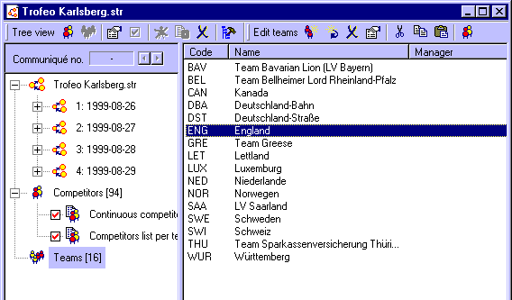

If in the event tree the Teams item is selected, the teams view will be visible.

Teams view
While the teams view is visible, all teams are displayed as a list.
The width of the displayed columns can be adjusted by dragging the little separation line between two column headers.
The various columns can be rearranged by clicking on a column header and dragging it to the desired location.
By clicking on a column header, the list will be sorted on that particular column's contents. By clicking the same column header again, the sorting order will be reversed.
View adjustments are stored for the next time you use StageRace.
You can select a team by single-clicking on it.
Multiple teams can be selected in one of the following ways:
Through in the menu you can at once select all teams.
Through in the menu a new team can be inserted into the teams view. The Team properties dialog will appear, allowing for the details of this new team to be entered.
If in the menu is checked, you will repeatedly be getting the Team properties dialog, in order to speed up the process of entering teams. If you want to stop, you cancel the current Team properties dialog.
Through in the menu one or more selected teams can be deleted. However, only teams can be deleted that are not assigned to any competitor.
Through in the menu one selected team can be edited. For this the Team properties dialog is displayed.
Cut, copy and paste teams through the Windows® clipboard.